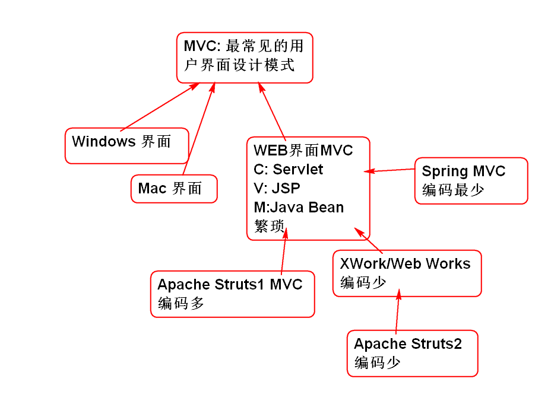
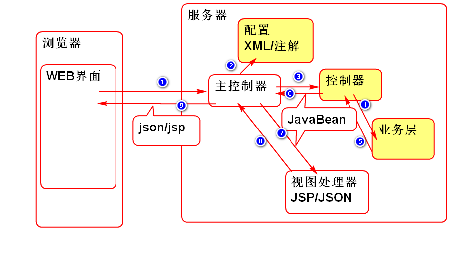

Spring MVC + Spring + MyBatis = SSM
Struts2 + Spring + Hibernate = SSH
SSH 支持两种配置使用方式:
Struts 架子

Struts1 和 Struts2 有什么关系:
答: 没有任何关系, 只有名字一样! 都使用了MVC设计模式
什么是Struts2: 使用了MVC模式的一个WEB编程框架(架子)
按照Struts2 的架构要求添加 MVC 组件, 即可使用Struts2.

使用步骤:
导入Struts 2, pom.xml
<dependency>
<groupId>org.apache.struts</groupId>
<artifactId>struts2-core</artifactId>
<version>2.5.1</version>
</dependency>
配置Struts 2 主控制器, web.xml
<filter>
<display-name>StrutsPrepareAndExecuteFilter</display-name>
<filter-name>StrutsPrepareAndExecuteFilter</filter-name>
<filter-class>org.apache.struts2.dispatcher.filter.StrutsPrepareAndExecuteFilter</filter-class>
</filter>
<filter-mapping>
<filter-name>StrutsPrepareAndExecuteFilter</filter-name>
<url-pattern>/*</url-pattern>
</filter-mapping>
添加Struts2 配置文件: resources/struts.xml
<?xml version="1.0" encoding="UTF-8"?>
<!-- 从 struts-2.5.dtd 文件中复制 DOCTYPE -->
<!DOCTYPE struts PUBLIC
"-//Apache Software Foundation//DTD Struts Configuration 2.5//EN"
"http://struts.apache.org/dtds/struts-2.5.dtd">
<struts>
</struts>
注意:文件名一定是struts.xml.
部署测试...
开发控制器类 DemoAction
/**
* Struts 2 的子控制器
*/
public class DemoAction {
//控制器中, 处理Web请求的方法
//默认情况下方法名为 execute
//方法的返回值是 字符串,值是目标视图的名称
public String execute(){
//调用业务模型, 调用业务层...
System.out.println("Hello World!");
return "success"; //反馈给用户的视图名
}
}
开发JSP视图: /WEB-INF/jsp/demo.jsp
<%@page contentType="text/html; charset=utf-8"
pageEncoding="utf-8"%>
<!DOCTYPE html>
<html>
<head>
</head>
<body >
<h1>Hello World!</h1>
<!-- /WEB-INF/jsp/demo.jsp -->
</body>
</html>
配置 struts.xml
<!-- 用于定义"包", 就是定义第一层WEB路径 -->
<!-- extends="struts-default" 自动继承了
struts-default.xml 中定义环境信息 -->
<package namespace="/demo" name="demo"
extends="struts-default">
<!-- 在package中定义url与控制器和视图对应关系
哪个URL被哪个控制器处理, 返回结果映射到
哪个JSP视图 -->
<!-- 请求url: demo/hello.action
由DemoAction的execute方法处理URL-->
<action name="hello"
class="cn.tedu.ssh1.action.DemoAction">
<!-- result 用于约定 控制器返回结果
和视图的对应关系: success对应demo.jsp-->
<result name="success">
/WEB-INF/jsp/demo.jsp
</result>
</action>
</package>
测试:
http://localhost:8080/ssh1/demo/hello.action
Struts 2 的默认请求都以 .action 为结尾